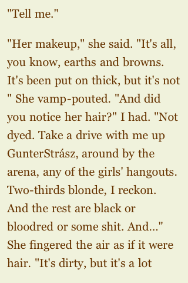
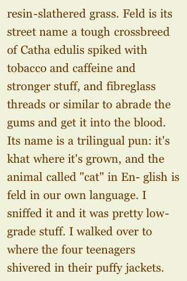
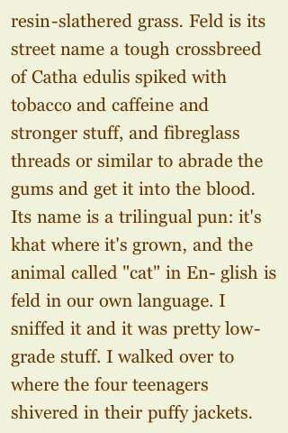
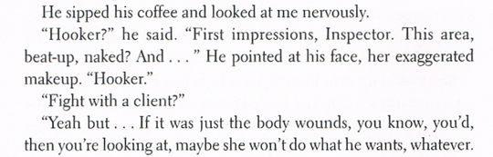

Web Standards for E-books (Sidebar)
by Joe Clark
Sidebar to “Web standards for E-books”
You may not believe, as I do, that print-book typography and design are going straight downhill as more and more junior “designers,” with less and less expertise, do the work for less and less money. It is nonetheless an open-and-shut case that the typography and design of any companion E-book you buy will be much, much worse. I have found no counterexamples among commercially-available E-books in plain-text or ePub formats; they’re all terrible, as far as I’ve seen.
Let’s take one example: The City & the City by China Miéville (2009), a murder mystery set in a divided city whose residents can’t even acknowledge each other. (★★★★★, by the way.) I’ll show you scans from the printed book along with screenshots from the E-book.
-
Real quotation marks become neutral quotation marks, as though reproducing typescript from an IBM Selectric. You don’t need to see the original to spot this one.
(This reader software is so dumb it breaks a line before a quote mark.)
-
Thin spaces between dots in an ellipsis become question marks.


(Ellipsis characters elsewhere in the E-book are just rendered as three dots.)
-
Hyphens are mangled completely.
-
Soft hyphen, which shouldn’t be used in E-book copy (the display engine must handle hyphenation), is rendered as hyphen-space. Look for the word English here:
 
 -
The common use, in desktop publishing, of a soft hyphen before a word to mean the word should not be hyphenated comes through as a question mark (look for mattress-sheltered dew):


-
Nonbreaking hyphen is rendered as hyphen then question mark (look for beat-up):

-
-
Character encoding is not the dumbest it could possibly be, as I would expect; it isn’t 1991-style US-ASCII, in that a word like GunterStrász is rendered well. But the name of one of the two cities in the book, Besźel, is a bit too weird for the file and comes out as Bes´zel (acute-accent character + z).


And none of this even begins to address structural markup.
How much does my vendor for this hacked and mangled “book,” Kobo, charge for it? $17.99.
Could it be worse?
Yes: You might have bought a book of blank verse.